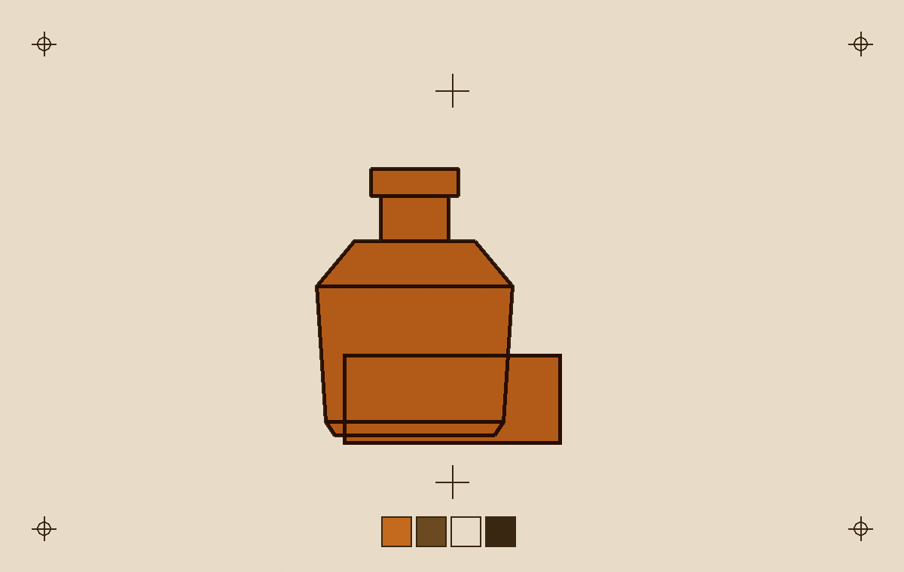
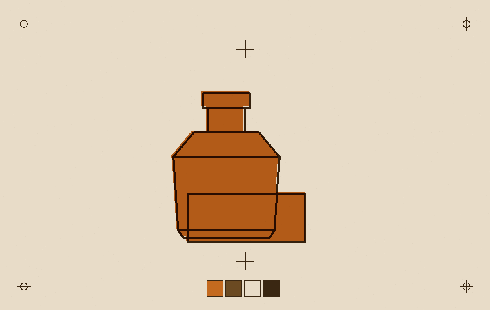
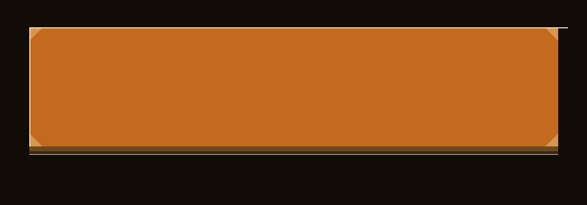
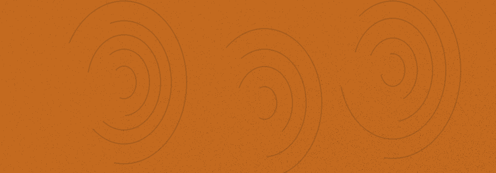

六块琥珀板叠印
首屏读数
- 板数
6- 每层位移
24px / 12px- 侧壁厚度
6px 至 10px
把 6 块琥珀板叠起来，就是这个品牌的主色：单板透光率 72%，六块叠满只剩 14%，边上有一枚指纹。
六块板各自是一个独立合成层，深度只由三件事说明：层号位移、侧壁宽度、以及透光率 0.72 的层数幂。全站没有任何背景模糊函数。
1.2mm 套印错位
两色之间只允许偏 1.2mm。偏出来的那一道，是纸白，不是发光。


#E8DCC8，不是高光。两张样张都是可见的正片，没有藏起来的位图。按钮把未套准那张推到 3.2 倍，让 1.2mm 的那一线错位占满画面。
公差上限 3mm。超过上限的板不进灯箱，直接进错误状态。
工艺参数与可测量值
四个数值同时写在页面上。任何一块板的厚度、倒角、透光率、错位量缺一个，那块板就不该存在。
板体与光学
- 等效厚度
8mm- 倒角
2mm / 45°- 单板透光率
72%- 套印错位
1.2mm- 玻璃边缘暗边
2px- 表面污染层
3%- 滚动视差
200px / 6px- 侧壁厚度
6px 至 10px
六块板叠起来的透光阶梯
每一块板让 72% 的光过去，六块叠满只剩 14%。这不是透明度的装饰，是乘法。
0.72 / 0.52 / 0.37 / 0.27 / 0.19 / 0.14
| 板 | 侧壁厚度 | 累计透光率 | 板面内容 | 污染 |
|---|---|---|---|---|
| 第 1 块 | 6px | 72% | 底足与暗房的地面线 | 落灰 2%，右下更密 |
| 第 2 块 | 7px | 52% | 瓶身外轮廓，象牙内衬 | 落灰 2%，右下更密 |
| 第 3 块 | 8px | 37% | 肩线与标签块，板宽多出 48px | 三枚指纹与签名拇指，9mm，3% |
| 第 4 块 | 9px | 27% | 瓶颈与口沿 | 落灰 2%，右下更密 |
| 第 5 块 | 10px | 19% | 瓶盖螺纹 | 落灰 2%，右下更密 |
| 第 6 块 | 10px | 14% | 顶面高光与套准十字 | 落灰 2%，右下更密 |
材料与工艺
铸造亚克力与倒角
板是浇铸的，不是挤出的：边缘抛光到 45°，倒角 2mm。厚度由 6px 到 10px 的侧壁面画出来，不是靠阴影假装。
套准标记与色标
十字准星的端点落在 0.5 单位栅格上，色标条四格分别是琥珀、暗琥珀、象牙、深棕。标记是印上去的，不是贴上去的图标。
透光相乘
灯在板后。每加一块板，透过的光乘 0.72。层次来自这一步乘法与侧壁的几何，全站没有一处背景模糊函数。


状态
加载中
板自底层向上依次落位，每块 180ms，落位那一下侧壁有 1px 过冲。按一下，它真的在跑。
空
这一组版还在压。周五下午两点回来，能看到侧壁的折射角度。
错误
这块板套印偏了 2.4mm，已经贴到 3mm 的公差上限，错误码 REG-24。先看未套准的原样，别照这块板调色。
公差上限 3mm
不可用
第三块板正在换件，换好之前不能加进灯箱。